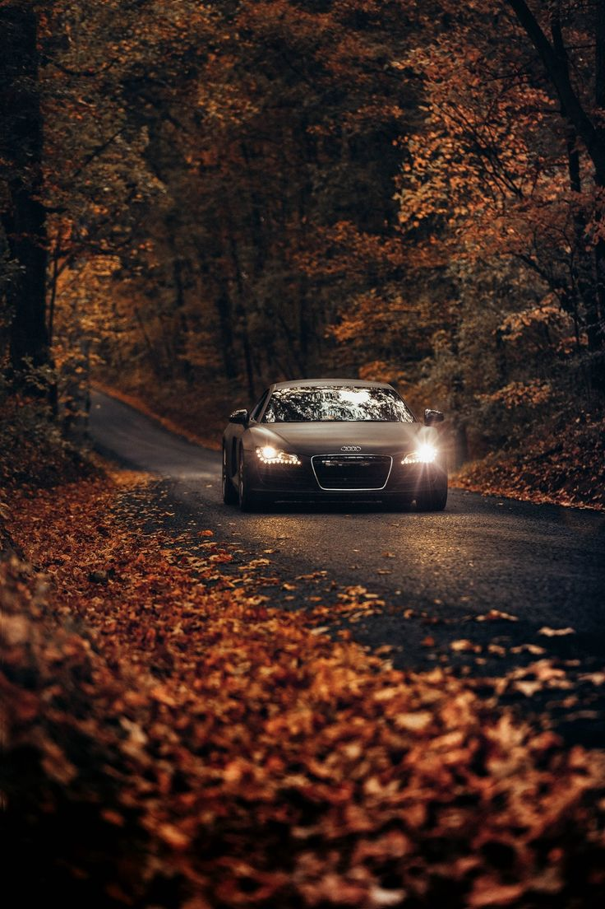

Cars are just machines that direct noting but happiness to men. Starting right from the Engine sounds al the way to the skidding sounds of the tyres and even more yet untold. Personally I've got nothing aganist electric cars, but when I think of the spits, not just spits but raw spits, and the snarls of a real engine, I can't just give up. That mechanical growl, that pops on the downshift - it's just not only a transportation but also a whole experience. Silent speed just doesn't speak to my soul the same way.
